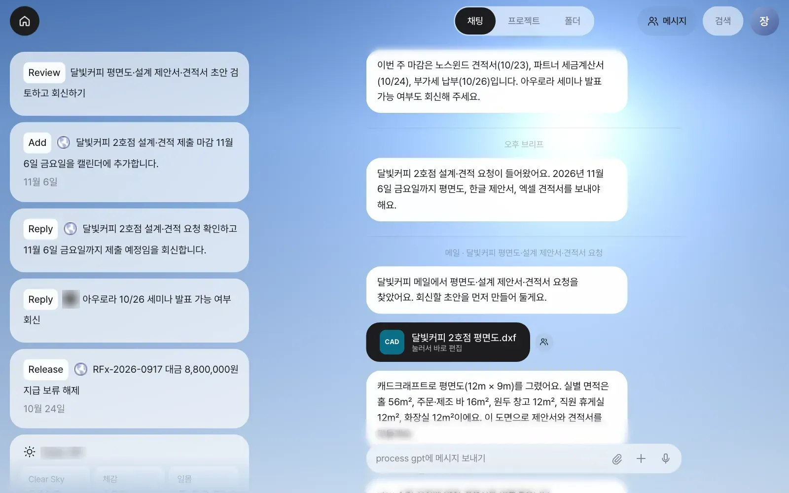
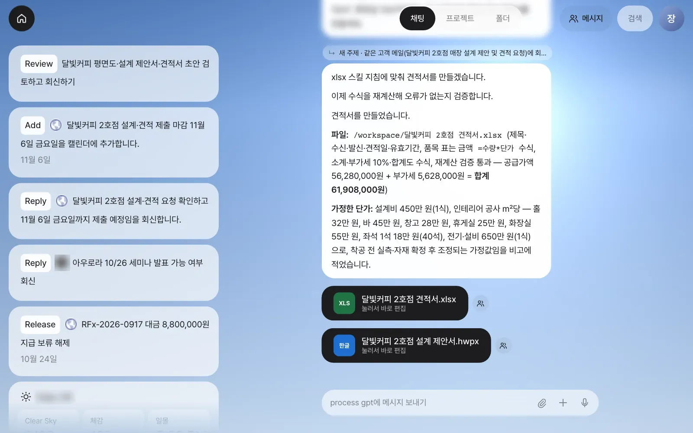
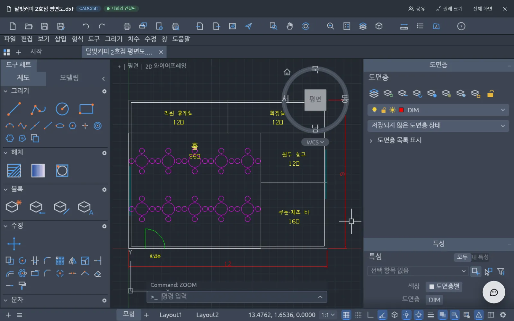
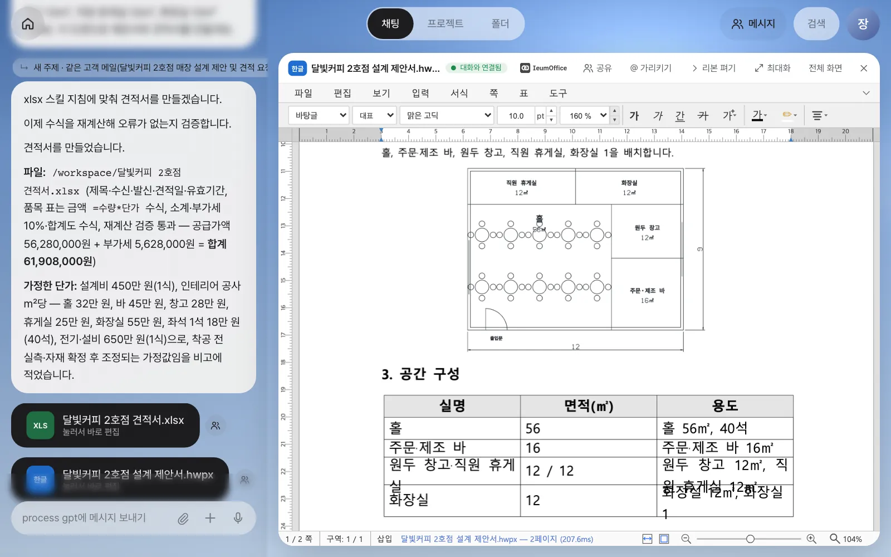
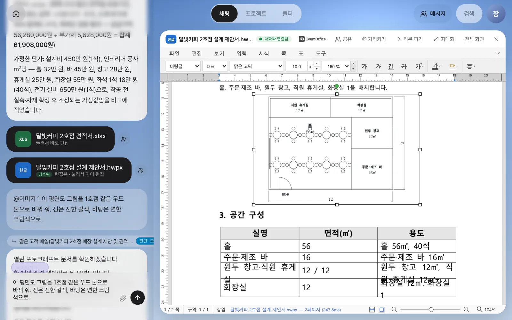
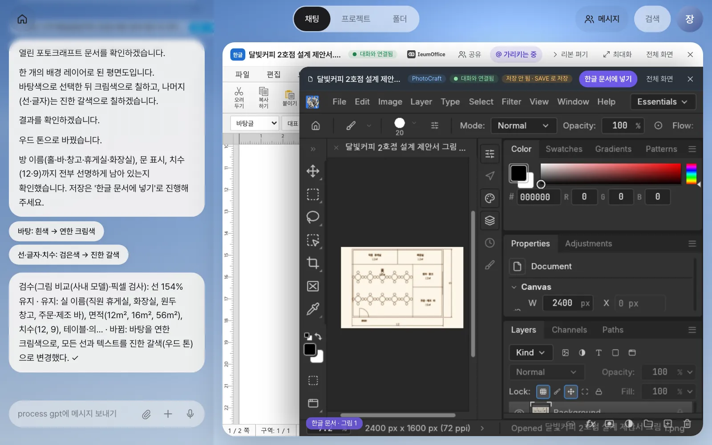
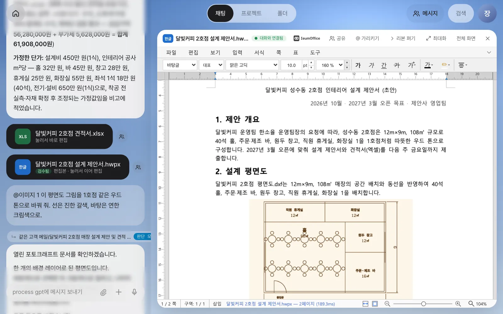
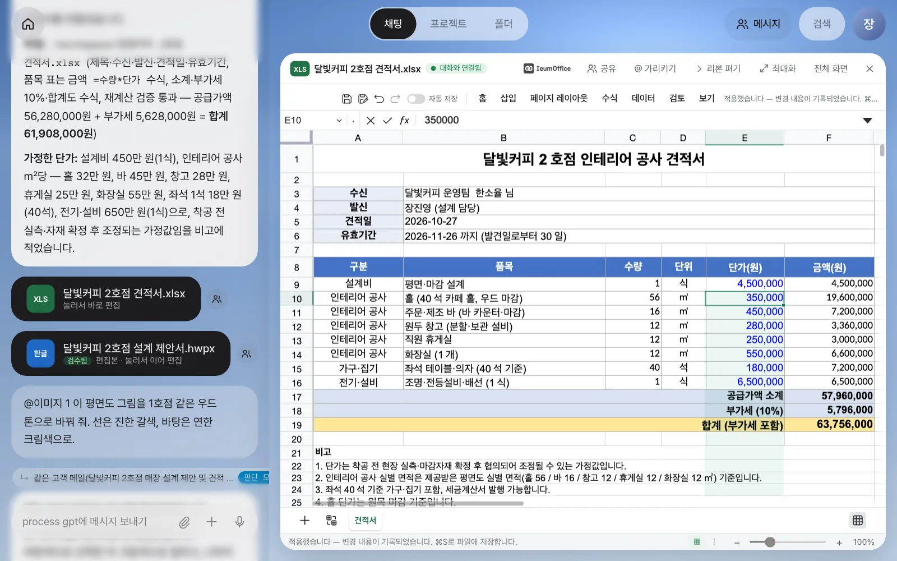
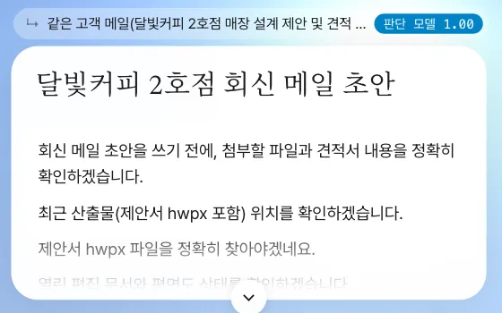

달빛커피의 요청 메일이 도착하면, 비서는 묻지 않고 평면도(캐드크래프트), 설계 제안서(한글), 견적서(엑셀) 초안을 만들어 둡니다. 사람은 초안을 열어 그림을 가리키고 색을 바꾸고, 단가를 고치고, 비서가 남긴 검수 메모를 확인한 뒤 회신합니다.
이 장의 흐름#
5장에서 메일함을 연결했고, 7·8장에서는 문서와 도면을 열어 둔 채 말로 고쳤습니다. 이번에는 둘을 합쳐, 고객이 문서를 요청하는 메일을 보냈을 때 어떤 일이 벌어지는지 끝까지 따라갑니다.
고객 메일 ─▶ 메일 분류 ─▶ ① 평면도 (캐드크래프트로 그림)
"평면도·제안서·견적서 요청한 문서와 │ 실별 면적
보내 주세요" 형식을 찾음 ├─▶ ② 설계 제안서 (한글) ─ 평면도 그림 + 공간 구성 표
└─▶ ③ 견적서 (엑셀) ─ 실별 면적 × ㎡당 단가
│
홈 「Review … 초안 검토하고 회신하기」 카드 ◀─┘
사람: 열어 보고 · 가리켜 고치고 · 검수 메모 확인 · 회신
핵심은 두 가지입니다.
- 묻지 않고 초안부터 — 고객이 문서를 요청하면 비서는 “만들까요?”라고 묻지 않고 초안을 만들어 둡니다. 보낼지 말지는 사람이 정합니다.
- 세 문서가 한 도면을 공유 — 평면도의 실별 면적이 제안서의 공간 구성 표와 견적서의 공사 수량으로 그대로 들어갑니다. 면적이 문서마다 다르게 적히는 일이 없습니다.
따라 하기 1 — 요청 메일이 도착한다#
달빛커피 운영팀에서 이런 메일이 옵니다.
보낸 사람: 한소율 <soyul.han@dalbit-coffee.example>
제목: 달빛커피 2호점 매장 설계 제안 및 견적 요청
내년 3월 성수동에 2호점을 열려고 합니다. 매장은 가로 12m × 세로 9m(약 108㎡)이고,
좌석 40석 정도의 홀, 주문·제조 바, 원두 창고, 직원 휴게실, 화장실 1개가 필요합니다.
분위기는 1호점처럼 따뜻한 우드 톤이면 좋겠습니다.
매장 평면도와 설계 제안서(한글), 견적서(엑셀)를 다음 주 금요일까지 보내 주실 수 있을까요?
실제 메일함(Gmail 또는 회사 메일)을 연결했다면 위 내용을 자기 주소로 보내면 됩니다. 5장의 데모 메일함을 쓰고 있다면 「설정 › 시스템 설정」(또는 「설정 › 계정」)의 「연습 메일 받기」에서 달빛커피 2호점 제안·견적 요청을 고르고 「연습 메일 받기」를 누릅니다. 위와 같은 메일이 도착합니다.
메일을 읽은 비서는 채팅에 구분선과 함께 알립니다.

실습에서 걸린 시간은 다음과 같습니다. 모델과 서버 상태에 따라 몇 분씩 달라질 수 있으니 기다리면 됩니다.
| 순서 | 결과 | 메일 도착 후 |
|---|---|---|
| 평면도 | 달빛커피 2호점 평면도.dxf + 실별 면적 안내 |
약 40초 |
| 견적서 | 달빛커피 2호점 견적서.xlsx + 가정한 단가 설명 |
약 2분 30초 |
| 설계 제안서 | 달빛커피 2호점 설계 제안서.hwpx |
약 6분 |
확인할 것: 채팅에 CAD·XLS·한글 카드 세 장, 홈에 「Review」 카드 한 장. 평면도 안내 문장(실습: “홀 56㎡, 주문·제조 바 16㎡, 원두 창고 12㎡, 직원 휴게실 12㎡, 화장실 12㎡”)의 면적이 제안서·견적서에도 같은 숫자로 들어갑니다.

따라 하기 2 — 평면도와 제안서 훑어보기#
CAD 카드를 누르면 8장의 캐드크래프트가 열립니다. 12m × 9m 외곽, 다섯 개 실, 테이블과 의자, 출입문, 치수가 그려져 있습니다.

한글 카드를 누르면 설계 제안서가 이음오피스 한글 편집기에서 열립니다. 제안 개요는 메일 내용으로 쓰였고, “2. 설계 평면도”에는 방금 그린 도면이 종이 문서에 맞게 흰 바탕·짙은 선으로 바뀌어 들어가 있으며, “3. 공간 구성” 표는 도면의 실별 면적으로 채워져 있습니다.

초안이므로 손볼 곳이 보입니다. 실습에서는 양식의 표가 네 줄이라 “원두 창고·직원 휴게실”이 한 칸에 합쳐졌습니다. 이런 곳은 표를 가리켜 고치면 됩니다(확인 문제 1).
따라 하기 3 — 그림을 가리켜 우드 톤으로#
제안서의 평면도 그림을 1호점처럼 따뜻한 색으로 바꿔 봅니다. 한글 편집기는 그림을 직접 칠할 수 없으므로, 비서는 그 그림만 포토크래프트로 꺼내 고친 뒤 같은 자리에 되돌려 놓습니다.
- 머리줄 「@ 가리키기」를 켜고 평면도 그림을 누릅니다. 입력창에
@이미지 1칩이 들어갑니다. - 이어서 적고 보냅니다:
이 평면도 그림을 1호점 같은 우드 톤으로 바꿔 줘. 선은 진한 갈색, 바탕은 연한 크림색으로. - 문서 위에 포토크래프트가 겹쳐 열리고(왼쪽 아래 「한글 문서 · 그림 1」 표시), 그다음 요청이 채팅으로 갑니다. 비서가 열린 포토크래프트에서 그림을 칠합니다.
- 답 뒤에 검수 메모가 붙으면 결과를 보고 「한글 문서에 넣기」를 누릅니다.


실습의 검수 메모:
검수(그림 비교(사내 모델)·픽셀 검사): 선 154% 유지 · 유지: 실 이름(직원 휴게실, 화장실, 원두 창고,
주문·제조 바), 면적(12㎡, 16㎡, 56㎡), 치수(12, 9), 테이블·의… · 바뀜: 바탕을 연한 크림색으로,
모든 선과 텍스트를 진한 갈색(우드 톤)으로 변경했다. ✓
「한글 문서에 넣기」를 누르면 “고친 그림을 한글 문서의 그림 1 자리에 넣었어요 · ⌘S 로 저장하세요”가 뜨고, 문서의 그림이 바뀝니다.

⌘S로 저장하면 카드가 「검수됨 · 편집본 · 눌러서 이어 편집」으로 바뀝니다. 「검수됨」 위에 마우스를 올리면 “검수: 그림 1을 포토크래프트에서 고쳐 같은 자리에 넣음 · 선 154% 유지 ✓”가 보입니다.
넣은 직후 ⌘S가 안 먹을 때
현재 버전에서는 「한글 문서에 넣기」 바로 뒤의 ⌘S가 편집본을 올리지 않을 때가 있습니다(카드가 「편집본」으로 바뀌지 않음). 그럴 때는 문서에서 글자 하나를 고쳤다가 되돌린 뒤 다시 ⌘S를 누르세요.
따라 하기 4 — 견적서 단가를 고치고 검수를 읽기#
견적서는 평면도의 실별 면적에 ㎡당 단가를 곱해 공사비를 냅니다. 홀은 원목으로 마감하기로 해서 단가를 올립니다.
- 견적서 카드를 열고 「@ 가리키기」를 켠 뒤 단가 열의 E10:E14를 끌어 선택합니다(
@E10:E14). - 적고 보냅니다.
이 실별 공사 단가 중 홀은 350,000원으로 올리고 나머지는 그대로 둬. 비고에 '홀 단가는 원목 마감 기준'이라는 줄도 추가해 줘.

그런데 이번 검수 메모는 경고였습니다.
검수(내용 비교(사내 모델)·개수 검사): 빠진 것: 비고에 '홀 단가는 원목 마감 기준' 추가 사라짐 ⚠
화면을 보면 25행에 비고가 들어가 있습니다. 검수가 잘못 본 것입니다. 이처럼 검수는 사람이 다시 볼 곳을 짚어 주는 장치이지 최종 판정이 아닙니다. ⚠가 뜨면 그 부분을 눈으로 확인하고, 정말 빠졌다면 “빠진 비고를 다시 넣어 줘”라고 하면 됩니다. 카드에는 ✓면 「검수됨」, ⚠면 「검수 확인 필요」가 붙습니다. 확인이 끝나면 도구 막대의 저장 아이콘으로 저장합니다.
검수는 무엇을 보나#
| 대상 | 비교하는 것 |
|---|---|
| 그림(포토크래프트·벡터크래프트) | 고치기 전후 그림의 선이 얼마나 남았는지(70% 미만이면 손실), 사내 모델이 전후 그림과 요청을 비교 |
| 도면(캐드크래프트) | 종류별 객체 수(예: “객체 16→18 ✓”) |
| 소리·영상 | 트랙·클립 수 |
| 워드·한글 | 글 길이, 문단·표·표의 행, 그림 수, 사내 모델의 전후 비교 |
| 엑셀 | 채워진 셀과 수식 수(예: “수식 17개 유지 ✓”) |
요청이 “지워 줘·빼 줘”처럼 줄이는 일이면 줄어든 것을 손실로 보지 않습니다. 그림 색 바꾸기에서 선이 사라지면 비서가 한 번 다른 방법(바탕색 기준 칠하기)으로 다시 하고, 그래도 안 되면 원래대로 되돌린 뒤 알립니다.
따라 하기 5 — 회신 메일 초안#
모두 확인했으면 홈의 「Review … 초안 검토하고 회신하기」 카드를 누릅니다. 카드에 담긴 요청(“…초안을 검토했어요. 회신 메일 초안을 써 줘.”)이 그대로 비서에게 가고, 몇 분 뒤 회신 메일 초안이 문서 카드로 옵니다.

실습에서 받은 초안에는 바뀐 합계(63,756,000원)와 우드 톤 그림, 단가가 가정값이라는 점까지 들어 있었고, 비서는 “견적서 유효기간을 한 번 더 확인해 달라”고 짚었습니다. 이런 보내기 전 마지막 점검을 매번 똑같이 하도록, 다음 장에서는 그 방법을 스킬로 저장합니다(10장).
정식 프로세스가 등록된 뒤에는
19장에서 이 일이 반복되는 흐름으로 발견되어 정식 프로세스로 등록되면, 같은 종류의 메일은 임시 초안 대신 그 프로세스로 시작합니다(“정식 등록된 ‘설계 제안·견적 대응’ 프로세스로 처리할게요”). 단계마다 담당자와 에이전트가 정해지고, 재무 검토는 재무 담당에게 넘어갑니다. 이 장의 화면은 아직 등록된 프로세스가 없는 상태입니다.
영상으로 보기
이 장의 흐름 전체가 메일 한 통에서 설계·제안·견적까지 영상에 있습니다.
확인 문제
- 제안서의 공간 구성 표에서 “원두 창고·직원 휴게실”이 한 칸에 합쳐져 있습니다. 표를 다섯 줄로 고치려면 어떻게 요청할까요?
- 평면도 그림의 색을 바꾸는 요청은 한글 편집기가 아니라 포토크래프트로 갑니다. 그림을 “지워 줘”나 “오른쪽으로 옮겨 줘”는 어디서 처리될까요?
- 검수 메모가 ⚠로 끝났습니다. 바로 다시 시키기 전에 무엇부터 해야 할까요?
답
- 「@ 가리키기」를 켜고 그 표를 눌러
@표 1 (공간 구성)칩을 넣은 뒤, 예를 들어이 표를 실마다 한 줄씩 다섯 줄로 다시 채워 줘. 원두 창고 12㎡, 직원 휴게실 12㎡로 나눠서.라고 적습니다. 비서는 열린 한글 문서의 표를 읽고 칸을 채우는 도구로 바로 고칩니다. - 한글 문서 쪽에서 처리됩니다. 그림 자체를 바꾸는 요청만 포토크래프트로 꺼내고, 지우기·옮기기·크기·캡션처럼 문서 안의 배치를 바꾸는 요청은 문서에 남습니다.
- 화면에서 그 부분을 눈으로 확인합니다. 실습처럼 검수가 잘못 본 경우도 있습니다. 정말 빠졌을 때만 빠진 것을 다시 요청합니다.